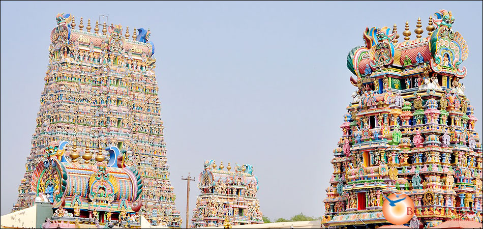
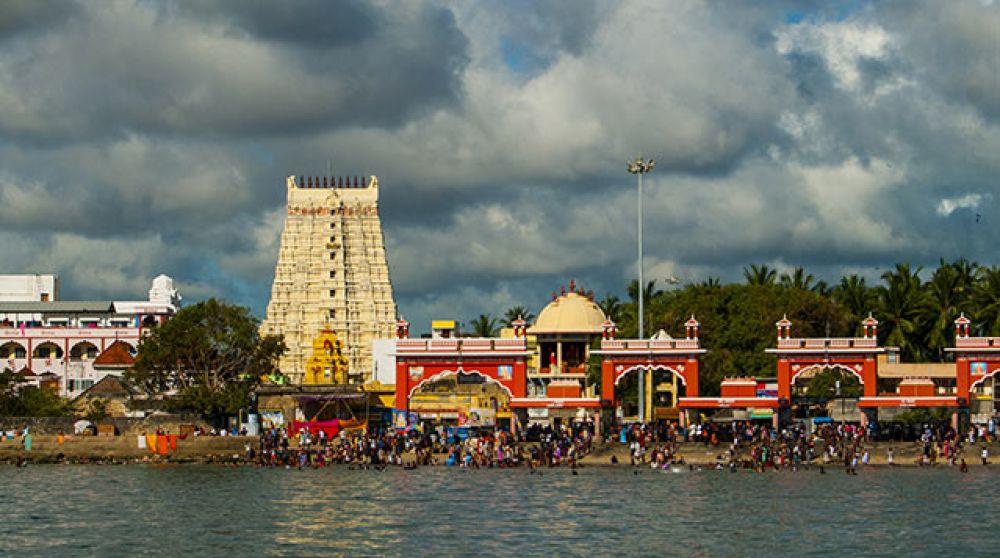
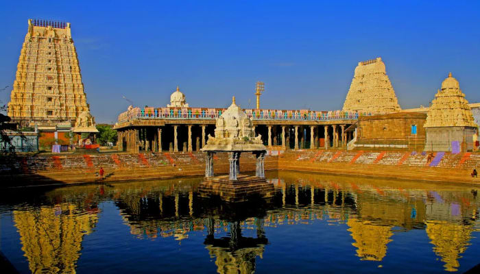

Temples of Tamil Nadu
Famous Temples of Tamil Nadu
Tamil Nadu is renowned for its magnificent temples, which are a blend of architectural brilliance, spirituality, and cultural heritage. These temples, some of which date back thousands of years, reflect the rich traditions and religious beliefs of the people of Tamil Nadu. The intricate carvings, towering gopurams, and sprawling temple complexes make them architectural marvels that continue to inspire awe and devotion.
Meenakshi Temple, Madurai
Tamil Nadu is home to Located in the heart of Madurai, the Meenakshi Temple is dedicated to Goddess Meenakshi and Lord Sundareswarar. The temple is known for its stunning gopurams (towering gateways), intricate carvings, and vibrant sculptures. The temple complex is vast, featuring 14 gopurams, a hall with a thousand pillars, and a sacred tank. It is one of the most visited pilgrimage sites in India.

Brihadeeswarar Temple, Thanjavur
This UNESCO World Heritage Site was built by Raja Raja Chola I in the 11th century. It is one of the largest temples in India and features an enormous tower (vimana) that stands over 200 feet tall. The temple is made entirely of granite, and its main sanctum houses a gigantic Shiva Lingam. The temple is an engineering marvel, as its towering vimana has remained intact for over a thousand years without any binding materials.

Ramanathaswamy Temple, Rameswaram
One of the holiest temples for Hindus, this temple is famous for its long corridors with intricately carved pillars. It is believed to be associated with the epic Ramayana. The temple is located on Rameswaram island and isconsidered one of the Char Dham pilgrimage sites. The temple’s corridor is the longest in the world, with more than 1200 intricately carved pillars, providing an awe-inspiring spiritual experience for visitors.

Kanchipuram Temples
Kanchipuram, known as the 'City of a Thousand Temples,' is home to many significant Hindu temples, including the Kailasanathar Temple and Ekambareswarar Temple. These temples are known for their historical significance and elaborate stone carvings. Kanchipuram was the capital of the Pallava dynasty, and its temples reflect their architectural prowess. The Kailasanathar Temple, the oldest in Kanchipuram, is built entirely of sandstone and features intricate carvings of various Hindu deities.
